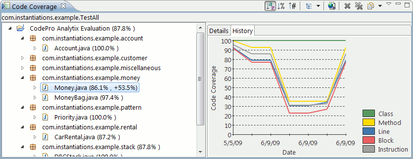

Code Coverage
Simple Code CoverageYou can measure the code coverage for a particular piece of code by selecting a class that defines a main method and then selecting "Run Code Coverage" from the "CodePro Tools" submenu. The selected class will then be executed and the results will be displayed in the Coverage View. From within the Coverage View, the results may also be exported to various report formats including HTML, XML and text. The information about how the class is to be run and what kind of coverage information to gather is captured in a special kind of launch configuration. You can also create the launch configuration manually, but the "Run Code Coverage" menu item makes that process easier. Once a launch configuration has been created, you can measure the coverage of your code either by using the "Run Code Coverage" menu item or by directly executing the launch configuration from the "Run" menu. Full Featured Code CoverageCode coverage works by instrumenting the bytecodes being loaded by the VM to collect data about which bytecodes have been executed. Code run using the code coverage launch configuration is instrumented dynamically as it is loaded by using a specialized class loader. This class loader becomes the default class loader for the VM that is initially executed. If additional class loaders are created by the application, or if additional VM's are run, they will not perform the dynamic instrumentation necessary to collect code coverage information. The alternative is to statically instrument the code before executing the application. CodePro provides support for instrumenting the code on a project-by-project basis. Each project has a Code Coverage property sheet. This property sheet allows you to control whether the class files are to be instrumented. It also allows you to control which class files are instrumented. As a convenience, the "Instrument Code" and "Uninstrument Code" menu items on the "CodePro Tools" submenu will turn instrumentation on and off while leaving the other project-related settings unchanged. Once your projects have been instrumented, you will collect code coverage information any time the code is run, using any launch configuration that you have created. In other words, you do not need to, and should not, use the Code Coverage launch configuration to run pre-instrumented code. There are two other implications of using this mechanism that you need to be aware of. The first is that if you want to run the code without gathering code coverage data, you will need to uninstrument all of the projects containing code that will be executed. The second implication is similar. If you are going to distribute the class files from your local machine, you need to be careful to uninstrument the code before you package it for delivery. Otherwise the code will be collecting code coverage data whenever it is executed. Viewing the ResultsEach time you measure a particular class, a coverage report will be generated. If you measure the same class multiple times, past versions of the report will be remembered so that those versions can be compared. The number of versions to be remembered can be configured. Coverage reports are stored on disk, so they are available even after Eclipse is closed and then re-opened.  Understanding the ResultsThe code coverage data that is gathered measures the number of times each basic block has been executed. A basic block is a sequence of one or more bytecodes (Java Virtual Machine instructions) that contains at most one branch instruction, which must be at the end of the block. The important thing about basic blocks is that if one instruction in the block is executed, then all of the instructions in the block will be executed. In addition, we keep track of the number of bytecodes in each basic block and enough information to be able to map each bytecode back to the class, method, and even line of code from which it was compiled. Given this data, we can compute the code coverage at several interesting levels of granularity, resulting in the following coverage measures:
Line coverage is probably the most easily misunderstood measure, because while all of the rest of the measured elements (classes, methods, blocks, and instructions) all map cleanly to blocks, lines do not necessarily. It all depends on how the code is formatted. Each line of code can contain either some or all of one or more basic blocks, and every basic block can map to one or more lines of code. AcknowledgementsThe Code Coverage tool is based on the EMMA code coverage engine. Detailed information on using EMMA is available from the EMMA web site: This feature is based on technology from the EMMA
Project. |
||||||||